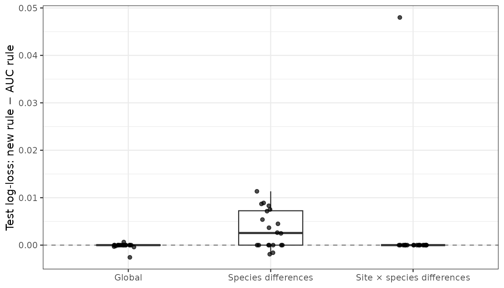

This page collects what the calibration benchmarks tell us about
predictive performance, downstream sensitivity and computing time. It
includes real single-species data from the Curiango study and a
multispecies simulation with known truth. Neither benchmark
shows a consistent advantage of one_se_logloss over
best_auc. The default favours probability scores
and simpler models; it is not a promise that every dataset will
improve.
Following the style of crywolf’s
performance article, the page reports measured results, practical
choices and limitations. The scripts are in dev/benchmarks/
in the source repository. Tables used here are cached in
inst/benchmarks/; building the vignette never downloads
data or re-runs hundreds of model fits.
Real data: the Curiango study
The Zenodo v2 deposit accompanying Piatti et al.’s Curiango manuscript supplies manually annotated three-second windows and classifier scores. We used 2,939 BirdNET and 8,032 custom-classifier windows with score ≥ 0.10, from seven physical sites. Files were checked against Zenodo MD5 checksums; data attribution follows the deposit’s CC BY 4.0 licence.
The full survey table has 458,520 rows but only 97,806 distinct one-minute recordings and 1,753 site-nights. The deposit description says 97,906 recordings; these analyses use the count actually read. Repeated rows were aggregated to the maximum score per classifier and recording before counting nightly detections. Counts are recordings, not raw table rows.
Candidates for one species
Through 3.1.0, the default multispecies family left only the global
model estimable for this one-species dataset; the four species-effect
models failed. From 3.2.0, calibrate() and
compare_calibration_models() choose the following family
automatically when only one species is observed:
calibration_models(single_species = TRUE)
# m0_global: tp ~ logit_conf
# m1_site_intercept: tp ~ logit_conf + (1 | site)
# m2_site_slope: tp ~ logit_conf + (logit_conf | site)uncorrelated = TRUE optionally adds independent site
intercepts and slopes. One species at one site uses only the global
model. Multiple species keep the original candidate family; with just
one site, non-estimable site random effects are omitted. An explicit
models list in compare_calibration_models()
overrides automatic choice.
The Curiango benchmark originally supplied these three formulas explicitly. The new automatic family reproduces that comparison to numerical precision (maximum difference in mean log-loss below 10^-15), with zero failed fits. It is therefore possible to use the benchmark’s candidates without constructing a custom list.
Predictions on held-out nights
The empirical benchmark uses nested 5 × 5 cross-validation. An outer test night never enters inner model selection or refitting. The two rules use identical candidates and partitions. Seed 2026 defines the outer folds; 2027–2031 define the five inner comparisons. This evaluates new nights at known sites, not transfer to new sites. The following are pooled outer-test metrics; smaller log-loss and Brier are better.
| Classifier | Rule | Log-loss | Brier | AUC |
|---|---|---|---|---|
| BirdNET | best_auc | 0.4585 | 0.1467 | 0.7274 |
| BirdNET | one_se_logloss | 0.4733 | 0.1515 | 0.6912 |
| Custom | best_auc | 0.3022 | 0.0894 | 0.9423 |
| Custom | one_se_logloss | 0.3020 | 0.0890 | 0.9423 |
For BirdNET, log-loss is about 3.2% higher under the one-standard-error rule; for Custom the difference is effectively zero. A paired bootstrap of 2,000 site-night resamples gives:
| Classifier | New minus AUC log-loss | 95% interval |
|---|---|---|
| BirdNET | 0.0147 | [-0.0016, 0.0323] |
| Custom | -0.0002 | [-0.0123, 0.0131] |
Both intervals include zero. They are conditional on the stored
predictions, not on re-running the whole selection procedure. A
sensitivity analysis holding out whole recordings instead of whole
nights favoured best_auc for BirdNET (log-loss difference
+0.0129, interval +0.0061 to +0.0198), but not clearly for Custom. One
outer partition was used per protocol. These metrics condition on score
≥ 0.10 and are not directly comparable with the article’s detector AUCs
calculated over a different score range.
Nightly histories and the cell-status regression
Final fits were applied to the full survey. A site-night is marked detected when at least one eligible recording has P(TP) ≥ 0.95. These are acoustic detection histories, not occupancy estimates. Selection using the package’s clip folds and using whole-night folds gives different sensitivities:
| Classifier | Folds | Detected: AUC | Detected: new | Nights changed | Gained / lost |
|---|---|---|---|---|---|
| BirdNET | Clips | 139 | 125 | 14 | 0 / 14 |
| BirdNET | Whole nights | 125 | 45 | 116 | 18 / 98 |
| Custom | Clips | 190 | 188 | 20 | 9 / 11 |
| Custom | Whole nights | 188 | 159 | 37 | 4 / 33 |
The Custom total of 190 versus 188 with clip folds hides 20 changed nights, not two: nine gain detection and eleven lose it. Most full-survey recordings have no manual truth, so these counts measure sensitivity to analysis choices, not which history is correct. The article’s environmental and occupancy models were not refitted.
The same benchmark exposed a grid-boundary bug in
cell_status(): a grid ending at 0.99 missed crossings
before a reviewed maximum above 0.99, and rounding down could include an
unreviewed score below the minimum. Including both observed endpoints
corrected 12 of 56 cell statuses, with no remaining
disagreements against curve endpoints. The core-species decision still
retained Curiango for Custom and excluded it for BirdNET. These are
regression checks, distinct from predictive benchmarks.
Multispecies: simulation with known truth
No real multispecies validation dataset was available for this benchmark. The following results are simulated, not empirical FrogNet performance. There are 20 independent seeds per scenario (2026–2045), six sites, eight species, 36 nights and two candidate windows per site × species × night. For each replicate, 2,304 windows from the first 24 nights are training data; 1,152 windows from 12 later nights are untouched test data.
The three scenarios are a global logistic score-to-truth relation, random species intercepts/slopes, and additional site plus site × species intercepts. Confidence is drawn uniformly between 0.10 and 0.9995; truth is Bernoulli with the specified probability. Heterogeneous scenarios also have a shared site-night intercept (SD 0.25) that is omitted from the candidate models. This is a controlled stress test, not a fitted model of the real community or classifier recall.
Five-fold selection uses whole training nights and the original five multispecies candidates m0–m4. Both rules receive the same comparison and are refitted only on training data. Test labels are used solely to evaluate predictions and detection histories. The summaries below are means ± SD across the 20 replicates, not confidence intervals.
| Scenario | Rule | Log-loss | Brier |
|---|---|---|---|
| Global | best_auc | 0.4629 ± 0.0105 | 0.1512 ± 0.0045 |
| Global | one_se_logloss | 0.4627 ± 0.0104 | 0.1512 ± 0.0045 |
| Site × species differences | best_auc | 0.4443 ± 0.0324 | 0.1448 ± 0.0124 |
| Site × species differences | one_se_logloss | 0.4467 ± 0.0363 | 0.1458 ± 0.0141 |
| Species differences | best_auc | 0.4576 ± 0.0308 | 0.1495 ± 0.0118 |
| Species differences | one_se_logloss | 0.4610 ± 0.0310 | 0.1503 ± 0.0118 |

Paired test log-loss differences across simulation replicates. Positive values favour best_auc; each point is one simulated dataset, not one clip.
In the global scenario, one_se_logloss selected the
global model in 20/20 replicates, versus 13/20 for AUC; the AUC-selected
final fit was singular in five replicates, versus none under the new
rule. In the species-difference scenario the new rule often omitted the
varying slope (14/20 intercept-only choices) and had slightly higher
mean test loss. With site × species differences, both rules selected m4
in 19/20 replicates; one different choice accounts for the largest
paired loss difference. These observations describe this simulation
design, not a universal ranking of the rules. None of the 1,500
cross-validation fits failed; singular fits were retained or excluded
according to each rule.
Detection histories, core species and matrices
With known window truth we can also compare nightly detections and community matrices. The history uses P(TP) ≥ 0.95 and k = 1; its truth reference is at least one true positive among that night’s simulated candidate windows. This is not latent ecological occupancy.
| Scenario | Rule | Night precision | Night sensitivity | Core species | Matrix MAE |
|---|---|---|---|---|---|
| Global | best_auc | 0.9872 | 0.1597 | 5.1 | 0.5651 |
| Global | one_se_logloss | 0.9879 | 0.1588 | 5.1 | 0.5658 |
| Site × species differences | best_auc | 0.9872 | 0.2112 | 3.3 | 0.5089 |
| Site × species differences | one_se_logloss | 0.9872 | 0.2087 | 3.4 | 0.5105 |
| Species differences | best_auc | 0.9851 | 0.1993 | 4.3 | 0.5202 |
| Species differences | one_se_logloss | 0.9836 | 0.1836 | 4.3 | 0.5303 |
cell_status() uses training data,
p_min = 0.95 and min_n = 15. Matrix MAE is the
mean absolute error of held-out site × month detection frequencies
against simulated truth, using all eight species on identical
axes for both rules (k_min = 1,
min_nights_month = 1). It is not an error between matrices
of different dimensions after core-species filtering.
| Scenario | Mean changed site-species-nights | Mean core-set Jaccard |
|---|---|---|
| Global | 0.9 | 1.000 |
| Site × species differences | 1.1 | 0.983 |
| Species differences | 16.8 | 0.851 |
There are 576 test site × species × night combinations per replicate. A high reliability threshold can yield high precision and low sensitivity; fewer detected nights must not automatically be interpreted as better calibration. Core sets need separate inspection even when probability scores or aggregate counts are similar.
Computing time
These are elapsed times on one machine, for the current implementation; they do not establish a speed-up over earlier package versions. They exclude downloads and rendering. The native Curiango comparisons were repeated three times with a fixed seed. Simulation timings cover five folds and five candidates, once for each independently generated dataset. Both rules reuse the same cross-validation fits.
| classifier | Windows | Candidates | Median seconds | Range seconds |
|---|---|---|---|---|
| BirdNET | 2939 | 3 | 1.12 | 1.10–1.52 |
| Custom | 8032 | 3 | 2.23 | 2.10–2.33 |
| scenario | Replicates | Median CV seconds | IQR seconds |
|---|---|---|---|
| Global | 20 | 1.71 | 1.54–1.92 |
| Site × species differences | 20 | 2.53 | 2.31–2.62 |
| Species differences | 20 | 2.33 | 2.04–2.50 |
The cached *-session.txt files record R and dependency
versions. Timing varies with hardware, background load, data and
convergence. These small frequentist fits do not predict the cost of a
brms refit.
What you can do, and what did not consistently improve
- Use
fold_group = "source_audio"or"night"when windows share an acoustic unit; clip folds can put correlated windows on both sides. - For one species, let the automatic family use site effects. For exact reproduction, provide an explicit candidate list to the comparison.
- Inspect probability scores, singularity, calibration curves and changed nights together. Higher AUC or a smaller model alone is not sufficient.
-
one_se_loglossdid not consistently reduce test loss in these datasets. A limited simulation and one real species do not justify reversing the default, or claiming universal improvement. - Grouped CV is not leave-one-site-out validation. New sites, sparse species, distribution shifts and Bayesian calibration remain outside this benchmark. Multispecies empirical validation is still needed.
Reproduce the results
Run these scripts from a source checkout with devtools,
lme4, pROC, dplyr,
tidyr, readr and, for Zenodo downloads,
jsonlite:
# New native single-species family: downloads only two evaluation tables
# if missing and checks their pinned MD5 hashes.
source("dev/benchmarks/curiango-native.R")
# 60 simulated datasets; expensive, opt-in regeneration.
source("dev/benchmarks/multispecies.R")
# Full empirical benchmark: nested CV, recording-level sensitivity,
# histories, diagnostics, paired bootstrap and the original report plots.
source("dev/benchmarks/curiango.R")The simulation script overwrites all its cached tables; regenerate
them after changing the generator, candidate set or design. The full
empirical script writes intermediate output under
dev/benchmarks/results/curiango/, separate from the small
cached vignette tables. No benchmark script is run automatically by this
article.